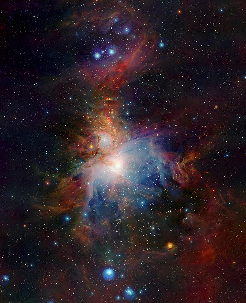

Tata Surya adalah kumpulan benda langit yang terdiri atas sebuah bintang yang disebut Matahari dan semua objek yang terikat oleh gaya gravitasinya.
Sistem Kosmik Kita
Merkurius, Venus, Bumi, dan Mars. Kelompok planet terdekat dengan matahari yang memiliki permukaan padat berbatu.
Jupiter dan Saturnus. Terbentuk dominan dari hidrogen dan helium, merupakan raksasa masif tanpa permukaan padat yang jelas.
Uranus dan Neptunus. Memiliki kandungan elemen yang lebih berat seperti air, amonia, dan metana membeku di atmosfer ekstremnya.
Matahari memegang 99.8% massa total seluruh sistem, mengikat delapan planet utama dalam tarian gravitasi abadi.
Tata Surya masih berupa kabut raksasa. Kabut ini terbentuk dari debu, es, dan gas yang disebut nebula, dan unsur gas yang sebagian besar hidrogen. Gaya gravitasi yang dimilikinya menyebabkan kabut itu menyusut dan berputar dengan arah tertentu, suhu kabut memanas, dan akhirnya menjadi bintang raksasa (matahari).
Matahari raksasa terus menyusut dan berputar semakin cepat, dan cincin-cincin gas dan es terlontar ke sekeliling Matahari. Akibat gaya gravitasi, gas-gas tersebut memadat seiring dengan penurunan suhunya dan membentuk planet dalam dan planet luar.
